기계설계산업기사 (2011-10-02 기출문제)
1과목: 기계가공법 및 안전관리
1. 1차로 가공된 가공물의 안지름보다 다소 큰 강구(steel ball)를 압입 통과시켜서 가공물의 표면을 소성변형으로 가공하는 방법은?
- 버니싱(burnishing)
- 래핑(lapping)
- 호닝(honing)
- 그라인딩(grinding)
(정답률: 74%)

2. 선반작업을 할 때 절삭 속도를 v(m/min), 원주율을 π, 회전수를 n(rpm)이라고 할 때 일감의 지름 d(mm)를 구하는 식은?
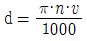
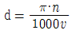
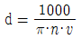
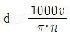
(정답률: 80%)
3. 다음 중 가공물이 회전운동하고 공구가 직선이송 운동을 하는 공작기계는?
- 선반
- 보링 머신
- 플레이너
- 핵 쏘잉 머신
(정답률: 83%)
4. 결합제의 주성분은 열경화성 합성수지 베크라이트로 결합력이 강하고 탄성이 커서 고속도강이나 광학유리 등을 절단하기에 적합한 숫돌은?
- vitrified 계 숫돌
- resinoid 계 숫돌
- silicate 계 숫돌
- rubber 계 숫돌
(정답률: 64%)
5. 트위스트 드릴의 각부에서 드릴 홈의 골부위(웨브두께)를 측정하기에 가장 적합한 것은?
- 나사 마이크로미터
- 포인트 마이크로미터
- 그루브 마이크로미터
- 다이얼 게이지 마이크로미터
(정답률: 62%)
6. 드릴링 머신의 안전사항으로 어긋난 것은?
- 장갑을 끼고 작업을 하지 않는다.
- 가공물을 손으로 잡고 드릴링한다.
- 구멍 뚫기가 끝날 무렵은 이송을 천천히 한다.
- 얇은 판의 구멍뚫기에는 보조판 나무를 사용하는 것이 좋다.
(정답률: 90%)
7. 선반가공에서 절삭속도를 빠르게 하는 고속절삭의 가공특성에 대한 내용으로 틀린 것은?
- 절삭능률 증대
- 구성인선 증대
- 표면 거칠기 향상
- 가공 변질층 감소
(정답률: 66%)
8. 내면 연삭에 대한 특징이 아닌 것은?
- 외경 연삭에 비하여 숫돌의 마멸이 심하다.
- 가공도중 안지름을 측정하기 곤란하므로 자동치수 측정장치가 필요하다.
- 숫돌의 바깥지름이 작으므로 소정의 연삭속도를 얻으려면 숫돌축의 회전수를 높여야 한다.
- 일반적으로 구멍 내면연삭의 정도를 높게 하는 것이 외면 연삭보다 쉬운 편이다.
(정답률: 68%)
9. 한계 게이지의 특징이라고 볼 수 없는 것은?
- 제품의 실제치수를 알 수 없다.
- 조작이 어렵고 숙련이 필요하다.
- 대량측정에 적합하고 합격, 불합격의 판정이 용이하다.
- 측정치수가 결정됨에 따라 각각 통과측, 정지측의 게이지가 필요하다.
(정답률: 77%)
10. 보통선반의 이송 스크류의 리드가 4mm 이고 200등분된 눈금의 칼라가 달려있을 때, 20눈금을 돌리면 테이블은 얼마 이동하는가?
- 0.2mm
- 0.4mm
- 20mm
- 40mm
(정답률: 68%)
11. 선반의 운전 중에도 작업이 가능한 척(check)으로 지름 10mm 정도의 균일한 가공물을 다량생산하기에 가장 적합한 것은?
- 벨(bell) 척
- 콜릿(collet) 척
- 드릴(drill) 척
- 공기(air) 척
(정답률: 49%)
12. CNC 선반에서 홈 가공 시 1.5 초 동안 공구의 이송을 잠시 정지시키는 지령 방식은?
- G04 P1500
- G04 Q1500
- G04 X1500
- G04 U1500
(정답률: 80%)
13. 인벌류트 치형을 정확히 가공할 수 있는 기어 절삭법은?
- 총형 커터에 의한 절삭법
- 창성에 의한 절삭법
- 형판에 의한 절삭법
- 압출에 의한 절삭법
(정답률: 51%)
14. 나사측정의 대상이 되지 않는 것은?
- 피치
- 리드각
- 유효지름
- 바깥지름
(정답률: 64%)
15. 수평밀링 머신에서 사용하는 커터 중 절단과 홈파기 가공을 할 수 있는 것은?
- 평면 밀링 커터(plane milling cutter)
- 측면 밀링 커터(side milling cutter)
- 메탈 슬리팅 쏘(metal slitting saw)
- 엔드밀(end mill)
(정답률: 45%)
16. 일반적으로 안전을 위하여 보호장갑을 끼고 작업을 해야 하는 것은?
- 밀링 작업
- 선반 작업
- 용접 작업
- 드릴링 작업
(정답률: 89%)
17. 밀링커터의 날수가 4개, 한날 당 이송량이 0.15mm, 밀링커터의 지름이 25mm 이고 절삭속도가 40m/min 일 때, 테이블의 이송속도는 약 몇 mm/min인가?
- 156
- 246
- 306
- 406
(정답률: 61%)
18. 선반작업에서 가늘고 긴 가공물을 절삭하기 위하여 꼭 필요한 부속품은?
- 면판
- 돌리개
- 맨드릴
- 방진구
(정답률: 66%)
19. 다음 드릴링 머신 중에서 대형 중량물의 구멍가공을 하기 위하여 암과 드릴헤드를 임의의 위치로 이동이 가능한 것은?
- 직립 드릴링 머신
- 탁상 드릴링 머신
- 다두 드릴링 머신
- 레디얼 드릴링 머신
(정답률: 71%)
20. 형상공차의 측정에서 진원도의 측정 방법이 아닌것은?
- 강선에 의한 방법
- 직경법에 의한 방법
- 반경법에 의한 방법
- 3점법에 의한 방법
(정답률: 58%)
2과목: 기계제도
21. 다음 중 가는 실선으로 사용하지 않는 선은?
- 지시선
- 치수선
- 해칭선
- 피치선
(정답률: 79%)
22. 다음 중 도면에 표시하는 스크레이퍼(scraper) 가공의 약호에 해당하는 것은?
- SH
- BR
- FS
- FB
(정답률: 79%)
23. 기하 공차의 종류에서 위치 공차에 해당되지 않는 것은?
- 동축도 공차
- 위치도 공차
- 평면도 공차
- 대칭도 공차
(정답률: 77%)
24. 3각법에 의한 투상도에서 누락된 정면도로 가장 적합한 것은?
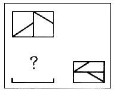
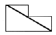
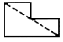
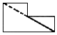
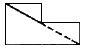
(정답률: 56%)
25. 그림과 같은 입체도의 화살표 방향 투상도로 가장 적합한 것은?
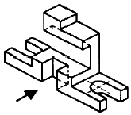
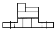
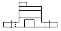
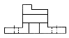
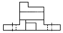
(정답률: 83%)
26. 다음 도면과 같은 데이텀 표적 도시기호의 의미 설명으로 올바른 것은?
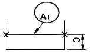
- 두 개의 X 점이 각각 점의 데이텀 표적
- 10mm 높이의 직사각형의 면이 데이텀 표적
- 두 개의 X 표를 연결한 선이 데이텀 표적
- 두 개의 X 표를 연결한 선을 반지름으로 하는 원이 데이텀 표적
(정답률: 72%)
27. 압력 배관용 탄소 강관을 나타내는 KS 재료 기호는?
- SPP
- SPLT
- SPPS
- SPHT
(정답률: 52%)
28. 그림과 같은 제 3각법 정투상도의 우측면도로 가장 적합한 것은?
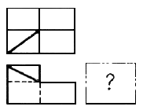
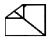
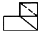
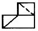
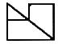
(정답률: 51%)
29. 다음 중 "KS B 1101 둥근 머리 리벳 15x40 SV400"으로 표시된 리벳의 호칭 도면의 해독으로 가장 적합한 것은?
- 리벳 구멍 15개, 리벳 지름 40 mm
- 리벳 호칭 지름 15mm, 리벳 길이 40 mm
- 리벳 호칭 지름 40mm, 리벳 길이 15 mm
- 리벳 피치 15mm, 리벳 구멍지름 40 mm
(정답률: 67%)
30. 나사를 도시하는 방법으로 가장 적절한 것은?
- 수나사의 바깥지름은 가는 실선으로 그린다.
- 수나사의 골지름은 굵은 실선으로 그린다.
- 암나사의 골지름은 굵은 실선으로 그린다.
- 완전 나사부와 불완전 나사부의 경계선은 굵은 실선으로 그린다.
(정답률: 57%)
31. 용접부를 나타내는 기호 중에서 용접부 표면의 모양이나 용접부 형상을 나타내는 기호로 보완할 수 있는데, 이런 기호를 보조기호라 한다. 다음 중 용접부에 사용하는 보조기호가 아닌 것은?
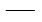
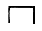
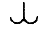
(정답률: 43%)
32. "임의의 축직각 단면에 있어서의 바깥둘레는 동일 평면위에서 0.02mm만큼 떨어진 2개의 동심원 사이에 있어야 한다." 의 뜻을 가진 것은?
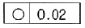
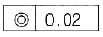
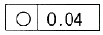
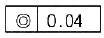
(정답률: 33%)
33. 그림과 같은 도면에서 점선으로 표시된 윤곽 안에 있는 투상도의 명칭으로 맞은 것은?
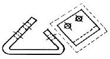
- 국부 투상도
- 회전 도시 투상도
- 보조 투상도
- 가상 투상도
(정답률: 70%)
34. 구멍의 치수가
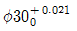
축은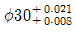
인 끼워맞춤이 있다. 이 끼워 맞춤의 최대 죔새는?- 0.042
- 0.021
- 0.029
- 0.008
(정답률: 74%)
35. 그림과 같은 입체도에서 화살표 방향을 정면도로 할 경우에 우측면도로 가장 적절한 것은?
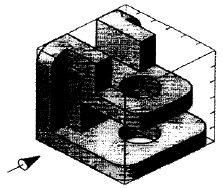
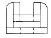
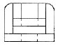
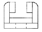
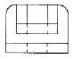
(정답률: 79%)
36. 다음은 베어링의 호칭번호를 나타낸 것이다. 베어링 안지름이 60mm 인 것은?
- 608 C2 P6
- 6312 ZNR
- 7206 CDBP5
- NA 4916 V
(정답률: 83%)
37. 나사 표기가 TM18이라 되어 있을 때 이는 무슨 나사인가?
- 관용 평행나사
- 29° 사다리꼴나사
- 관용 테이퍼나사
- 30° 사다리꼴나사
(정답률: 62%)
38. 2개의 입체가 서로 만날 경우 두 입체 표면에 만나는 선이 생기는데 이 선을 무엇이라고 하나?
- 분할선
- 입체선
- 직립선
- 상관선
(정답률: 75%)
39. 일반 구조용 압연강재의 재료 기호인 것은?
- SCM 430
- SM 400A
- SPS 9A
- SS 330
(정답률: 76%)
40. KS 규격에 따른 회 주철품의 재료 기호는?
- WC
- PBC
- BCD
- GC
(정답률: 76%)
3과목: 기계설계 및 기계재료
41. 다음 주철 중 인장강도가 가장 낮은 것은?
- 백심가단주철
- 구상흑연주철
- 보통주철
- 흑심가단주철
(정답률: 58%)
42. 다음 담금질 조직 중에서 경도가 가장 큰 것은?
- 페라이트
- 펄라이트
- 마텐자이트
- 트루스타이트
(정답률: 81%)
43. 담금질한 강에 인성을 증가시키고 경도를 감소시키기 위하여 강을 A1점 이하의 온도로 다시 가열하여 인성을 증가시키는 열처리를 무엇이라 하는가?
- 하드페이싱
- 숏피닝
- 질화법
- 뜨임
(정답률: 64%)
44. 다음 중 일반적인 청동합금의 주요 성분은?
- Cu-Sn
- Cu-Zn
- Cu-Pb
- Cu-Ni
(정답률: 63%)
45. 탄소강에서 탄소함유량이 증가할 경우 탄소강의 기계적 성질은 어떻게 변화하는가?
- 경도 및 연성 감소
- 경도 및 연성 증가
- 강도 및 경도 감소
- 강도 및 경도 증가
(정답률: 69%)
46. 다음 기계재로 중 용광로(고로)에서 대량으로 제조되는 것은?
- 구리
- 선철
- 주철
- 탄소강
(정답률: 62%)
47. 냉간 가공과 열간 가공을 구별할 수 있는 온도를 무슨 온도라고 하는가?
- 포정온도
- 공석온도
- 공정온도
- 재결정온도
(정답률: 81%)
48. 티탄의 일반적인 성질에 속하지 않는 것은?
- 비교적 비중이 작다.
- 용융점이 낮다.
- 열전도율이 낮다.
- 산화성 수용액 중에서 내식성이 크다.
(정답률: 43%)
49. 100~200℃에서 공냉방법으로 마텐자이트 조직을 얻는 저온 뜨임의 목적에 해당되지 않는 것은?
- 담금질 응력 제거
- 치수의 경년화 방지
- 연마균열 방지
- 마모성의 향상
(정답률: 59%)
50. 다음 중 구리(Cu)의 성질을 설명한 것으로 틀린것은?
- 황산, 염산에 대한 내식성이 크다.
- 전기전도율과 열전도율은 금속 중에서 은(Ag) 다음으로 높다.
- 연성과 전성이 풍부하다.
- Ni, Sn, Zn 등과 합금이 잘된다.
(정답률: 68%)
51. 기어 설계 시 전위 기어를 사용하는 이유로 거리가 먼 것은?
- 중심 거리를 자유로이 변화시키려고 할 경우에 사용
- 언더컷을 피하고 싶은 경우에 사용
- 베어링에 작용하는 압력을 줄이고자 할 경우 사용
- 기어의 강도를 개선하려고 할 경우 사용
(정답률: 38%)
52. 90rpm으로 회전하고 980N의 하중을 받는 레이디얼 볼베어링의 기본 동정격하중은 약 몇 kN인가? (단, 하중계수는 1로 하고, 수명은 5000시간으로 한다.)
- 2.94
- 4.91
- 8.83
- 15.70
(정답률: 27%)
53. 구조는 간단하면서 복잡한 운동을 구현할 수 있는 기계요소로서 내연 기관의 밸브 개폐기구 등에 사용되는 것은?
- 마찰차(friction wheel)
- 클러치(clutch)
- 기어(gear)
- 캠(cam)
(정답률: 64%)
54. 축의 자중을 무시하고 회전축의 중심에서 1개의 회전체의 하중에 의해 축의 처짐이 0.01mm 발생하면, 축의 위험속도는 약 몇 rpm 인가?
- 4598 rpm
- 6420 rpm
- 9458 rpm
- 14568rpm
(정답률: 33%)
55. 수압이 2.75MPa이고, 허용인장강도가 49.⑤MPa이며, 이음 효율이 70%인 강관의 바깥지름은 몇 mm 이상이어야 하는가? (단, 부식 여유는 1mm이고, 강관의 안지름은 580mm이다.)
- 582
- 629
- 604
- 675
(정답률: 40%)
56. 4m/s의 속도로 전동하고 있는 벨트의 긴장측의 장력이 1.23kN, 이완측의 장력이 0.49kN 라고 하면, 전달하고 있는 동력은 몇 kW 인가?
- 1.55
- 1.86
- 2.21
- 2.96
(정답률: 35%)
57. 밴드 브레이크의 긴장측 장력 7.99kN, 두께 2mm, 허용인장응력 78.48 MPa 일 때 밴드의 폭은 약몇 mm 이상이어야 하는가? (단, 이음효율은 100 % 로 한다.)
- 43
- 51
- 60
- 71
(정답률: 42%)
58. 다음 중 운동용 나사에 해당하지 않는 것은?
- 사각 나사
- 사다리꼴 나사
- 톱니 나사
- 미터 나사
(정답률: 58%)
59. 두 축의 중심거리 300mm, 속도비가 2:1로 감속되는 외접 원통마찰의 원동차(D1)와 종동차(D2)의 지름은 각각 몇 mm 인가?
- D1 = 600mm, D2 = 1200mm
- D1 = 200mm, D2 = 400mm
- D1 = 100mm, D2 = 200mm
- D1 = 300mm, D2 = 600mm
(정답률: 50%)
60. 마찰에 의하여 회전력을 전달하며 축의 임의의 위치에 보스를 고정할 수 있는 키는?
- 미끄럼키
- 스플라인
- 접선키
- 원뿔키
(정답률: 36%)
4과목: 컴퓨터응용설계
61. CAD 시스템의 3차원 공간에서 평면을 정의할 때 입력조건으로 충분치 않는 것은?
- 한 개의 직선과 이 직선의 연장선 위에 있지 않는 한 개의 점
- 일직선 상에 있지 않은 세 점
- 한 개의 점과 평면의 수직 벡터
- 두 개의 직선
(정답률: 59%)
62. 래스터 스캔 디스플레이에서 컬러를 표현하기 위해 사용되는 3가지 기본 색상에 해당하지 않는 것은?
- 흰색(white)
- 녹색(green)
- 적색(red)
- 청색(blue)
(정답률: 74%)
63. 3차원 좌표계를 표현하는데 있어서 P(r, θ, z1)로 표현되는 좌표계는 무엇인가? (단, r = (x, y) 평면에서의 직선거리, θ = 각도, z1 = z축 거리이다.)
- 직교좌표계
- 극좌표계
- 원통좌표계
- 구면좌표계
(정답률: 61%)
64. 다음과 같은 원추곡선(conic curve) 방정식을 정의하기 위해 필요한 구속조건의 수는?
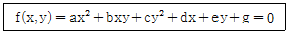
- 3개
- 4개
- 5개
- 6개
(정답률: 55%)
65. 솔리드 모델링의 데이터 구조 중 CSG(Constructive Solid Geometry) 트리 구조의 특징에 대한 설명으로 틀린 것은?
- 데이터 구조가 간단하고 데이터의 양이 적어 데이터 구조의 관리가 용이하다.
- CSG 트리로 저장된 솔리드는 항상 구현이 가능한 입체를 나타낸다.
- 화면에 입체의 형상을 나타내는 시간이 짧아 대화식 작업에 적합하다.
- 기본형상(primitive)의 파라메터만 간단히 변경하여 입체 형상을 쉽게 바꿀 수 있다.
(정답률: 56%)
66. 2차원 평면에서 원(circle)을 정의하고자 할 때 필요한 조건으로 틀린 것은?
- 중심점과 원주상의 한 점으로 정의
- 원주상의 3개의 점으로 정의
- 두개의 접선으로 정의
- 중심점과 하나의 접선으로 정의
(정답률: 68%)
67. 베지어(Bezier) 곡선의 특징에 관한 설명으로 틀린것은?
- 베지어 곡선은 특성 다각형의 시작점과 끝점을 반드시 통과한다.
- 베지어 곡선은 특성 다각형의 내측에 존재한다.
- 특성 다각형의 꼭지점 순서를 거꾸로 하여 베지어 고선을 생성할 경우 다른 곡선이 된다.
- 특성 다각형의 1개의 꼭지점 변화가 베지어 곡선전체에 영향을 미친다.
(정답률: 65%)
68. 순서가 정해진 여러 개의 점들을 입력하면 이를 모두를 지나는 곡선을 생성하는 것을 무엇이라고 하나?
- 보간(interpolation)
- 근사(approximation)
- 스무딩(smoothing)
- 리메싱(remeshing)
(정답률: 71%)
69. CAD 시스템에서 많이 사용한 Hermite 곡선 방정식에서 일반적으로 몇 차식을 많이 사용하는가?
- 1차식
- 2차식
- 3차식
- 4차식
(정답률: 74%)
70. CAD/CAM 시스템을 활용하는 방식에 따라 컴퓨터시스템을 3가지로 구분한다고 할 때 이에 해당되지 않는 것은?
- 중앙통제형 시스템(host based system)
- 분산처리형 시스템(distributed based system)
- 연결형 시스템(connected system)
- 독립형 시스템(stand alone system)
(정답률: 57%)
71. 다음 중 CAD 정보의 출력장치가 될 수 없는 것은?
- 서멀 왁스 플로터(thermal wax plotter)
- 벡터 디스플레이(vector display)
- 라이트 펜(light pen)
- 레이저 프린트(laser printer)
(정답률: 80%)
72. 다음 모델 중 공학적인 해석(유한요소해석 등)에 적합한 것은?
- 와이어 프레임 모델(wire frame model)
- 서피스 모델(surface model)
- 솔리드 모델(solid model)
- 시스템 모델(system model)
(정답률: 71%)
73. IGES 파일의 구조에 해당하지 않는 것은?
- Start Section
- Local Section
- Directory Entry Section
- Parameter Data Section
(정답률: 68%)
74. 복셀(voxel) 모델을 사용할 때의 특징에 관한 설명으로 틀린 것은?
- 어떠한 형상의 물체이건 간에 정확한 형상의 표현이 가능하다.
- 질량, 관성 모멘트 등의 성질을 계산하기 용이하다.
- 공간 내의 물체를 표현하기 용이하다.
- 필요로 하는 메모리 공간이 복셀의 크기를 줄일수록 급격히 증가한다.
(정답률: 32%)
75. 원(Circle)이 중심과 반지름을 갖는 2차원 좌표 평면상에서의 수학적 표현방법 중 맞는 것은? (단, 중심은 (a, b), 반지름은 C 이다.)
- (x+a)2+(y+b)2=C2
- (x-a)+(y-b)=C
- (x-a)2+(y+b)=C
- (x-a)2+(y-b)2=C2
(정답률: 50%)
76. 컴퓨터간의 정보 교환을 보다 향상시키기 위해 사용하는 네트워크 기술에서의 통신규약을 무엇이라 하는가?
- PROTOCOL
- PARITY
- PROGRAM
- PROCESS
(정답률: 65%)
77. 제시된 단면곡선을 안내곡선에 따라 이동하면서 생기는 궤적을 나타낸 곡면은?
- 룰드 곡면
- 스윕 곡면
- 보간 곡면
- 블랜드 곡면
(정답률: 77%)
78. 유기 전계 발광 소자를 사용한 표시장치로 전자빔이 형광막과 충돌로 발광하는 브라운관(CRT)과 유사한 동작이 유리기판 위에 형성되어 화면을 나타내는 장치는?
- Organic electroluminescent display
- Liauid crystal display
- Plasma panel
- Image scanner
(정답률: 54%)
79. 식 y = 3x + 4인 직선에 직교하면서 점(3, 1)인 지점을 지나는 직선의 방정식은?
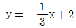
- y = -3x + 10
- y = 3x - 8
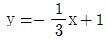
(정답률: 44%)
80. 기하학적 형상(Geometric Model)을 나타내는 방법 중 점, 직선, 곡선에 의해서만 3차원 형상을 표시하는 것은?
- line modeling
- shaded modeling
- surface modeling
- wire frame modeling
(정답률: 74%)